本文的大部分内容并非直接涉及 THREE.js，而是 而不是一般性地调试 JavaScript。这似乎很重要 许多刚开始使用 THREE.js 的人也只是 从 JavaScript 开始，所以我希望这可以帮助他们更轻松 解决他们遇到的任何问题。
调试是一个很大的话题，我可能无法开始涵盖 需要了解的一切，但如果您是 JavaScript 新手 那么这里尝试给出一些建议。我强烈 建议你花一些时间来学习它们。他们会帮助你
所有浏览器都有开发人员工具。 Chrome， Firefox， Safari， Edge.
在 Chrome 中，您可以点击 ⋮ 图标，选择“更多工具”->“开发人员工具”
访问开发者工具。那里还显示了键盘快捷键。
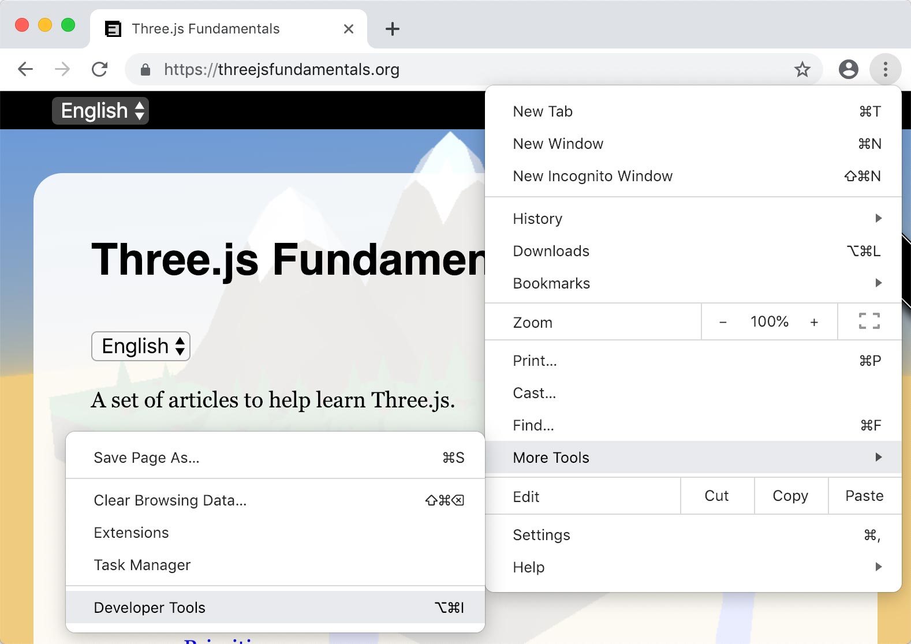
在 Firefox 中，单击 ☰ 图标，选择“Web Developer”，然后选择
“切换工具”
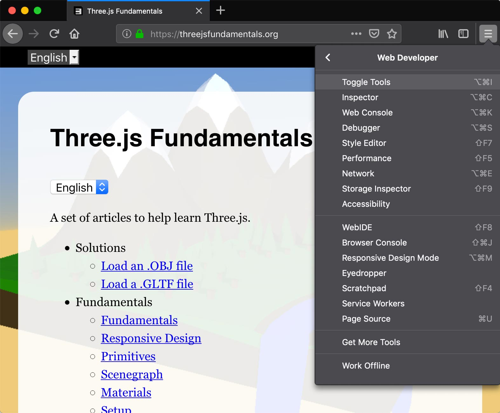
在 Safari 中，您首先必须从 高级 Safari 首选项.
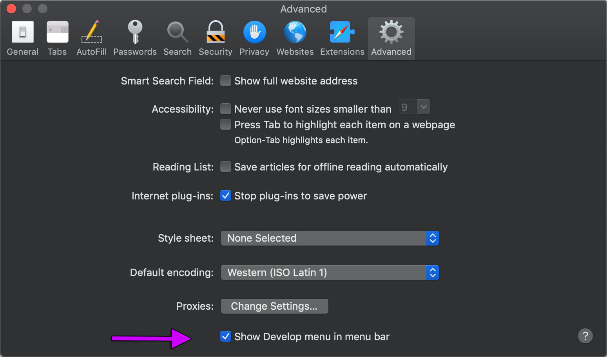
然后在“开发”菜单中，您可以选择“显示/连接 Web Inspector”。
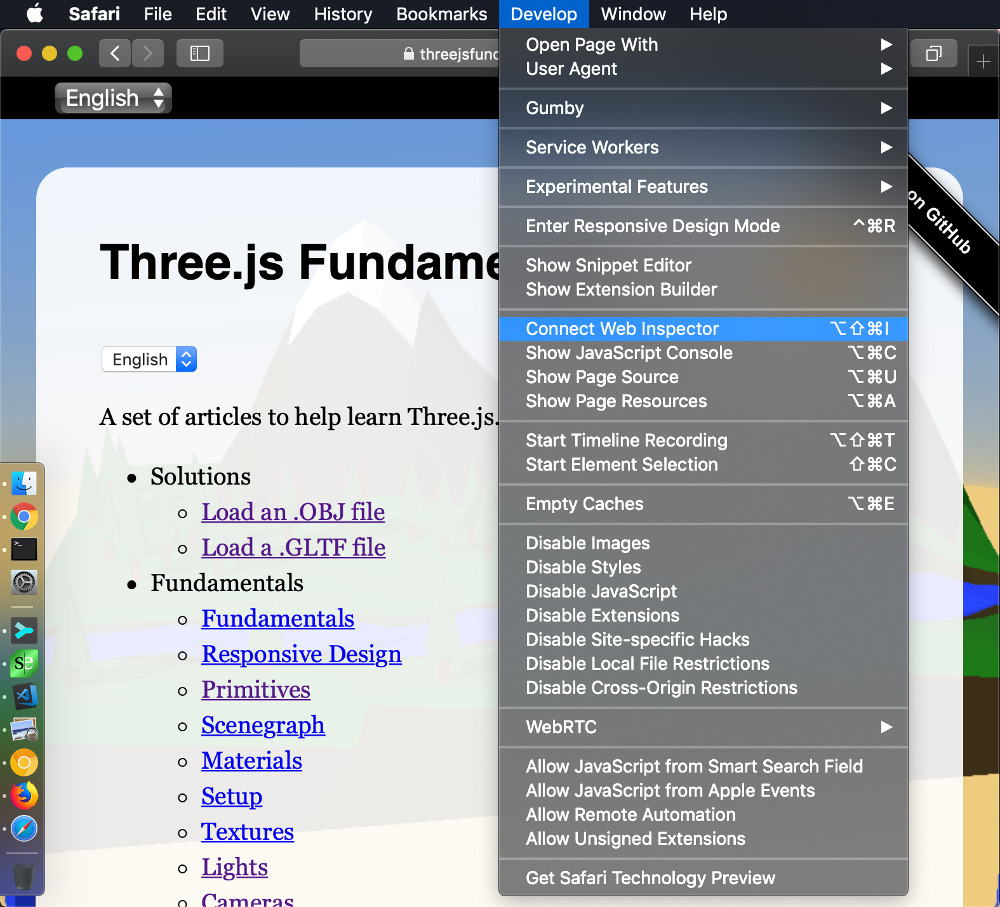
使用 Chrome，您还可以使用计算机上的 Chrome 来调试 Android 手机或 Chrome 上运行的网页平板电脑。 与 Safari 类似，您可以 使用计算机调试 iPhone 和 iPad 上 Safari 上运行的网页.
我最熟悉 Chrome，因此本指南将使用 Chrome 作为提到工具时的示例，但大多数浏览器都有类似的 功能，因此应该很容易将此处的任何内容应用于所有浏览器。
浏览器尝试重用已下载的数据。这太棒了 对于用户来说，如果您第二次访问某个网站，许多文件 用于显示站点将不会再次下载。
另一方面，这可能不利于 Web 开发。你改变 计算机上的文件，重新加载页面，您看不到更改 因为浏览器使用上次获取的版本。
Web开发过程中的一个解决方案是关闭缓存。这个 这样浏览器将始终获得文件的最新版本。
首先从角落菜单中选择设置
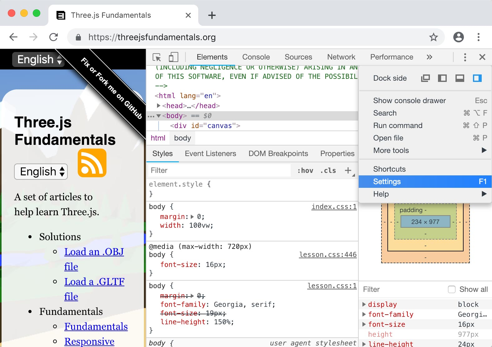
然后选择“禁用缓存（当开发工具打开时）”。
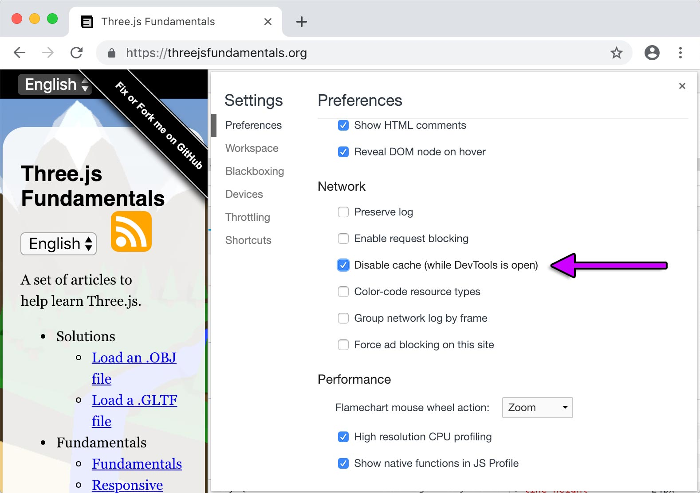
在所有开发工具内是一个控制台。它显示警告和错误消息。
阅读消息！
通常应该只有 1 或 2 条消息。
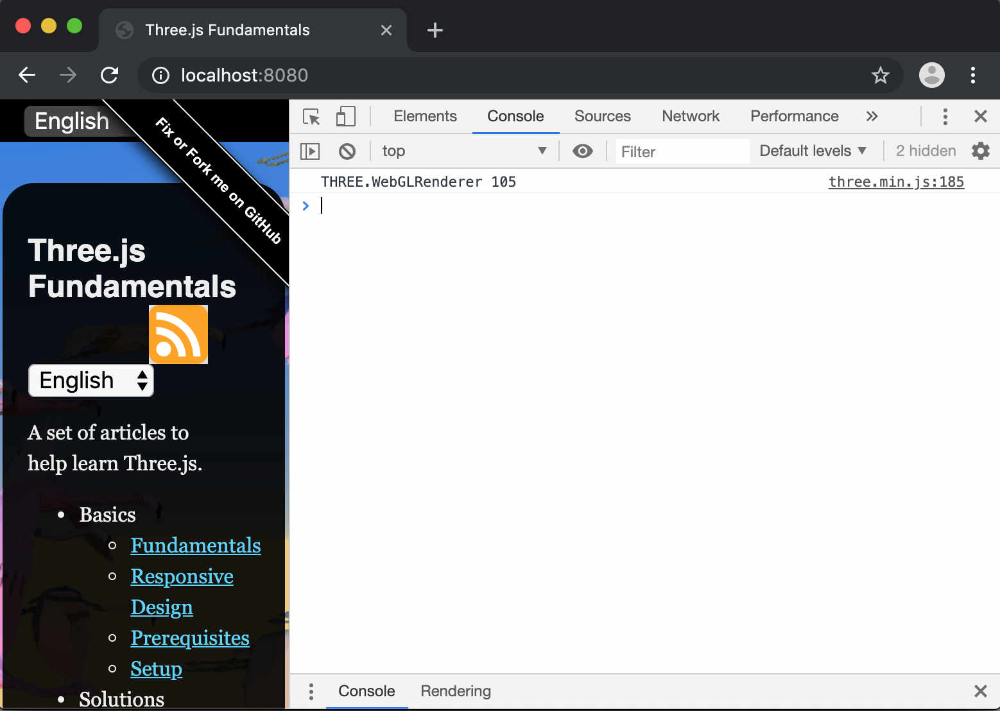
如果您看到任何其他消息，请阅读。例如：
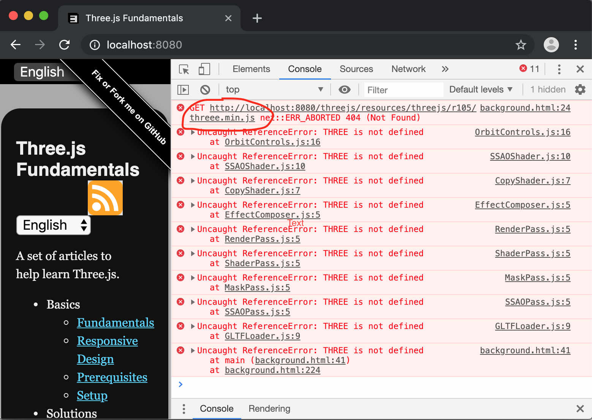
我将“三”错误拼写为“三”
您还可以使用console.log将您自己的信息打印到控制台，如
console.log(someObject.position.x, someObject.position.y, someObject.position.z);
更酷的是，如果您记录一个对象，您可以检查它。例如，如果我们记录 gLTF 文章中的根场景对象
{
const gltfLoader = new GLTFLoader();
gltfLoader.load('resources/models/cartoon_lowpoly_small_city_free_pack/scene.gltf', (gltf) => {
const root = gltf.scene;
scene.add(root);
+ console.log(root);
然后我们可以在 JavaScript 控制台中展开该对象
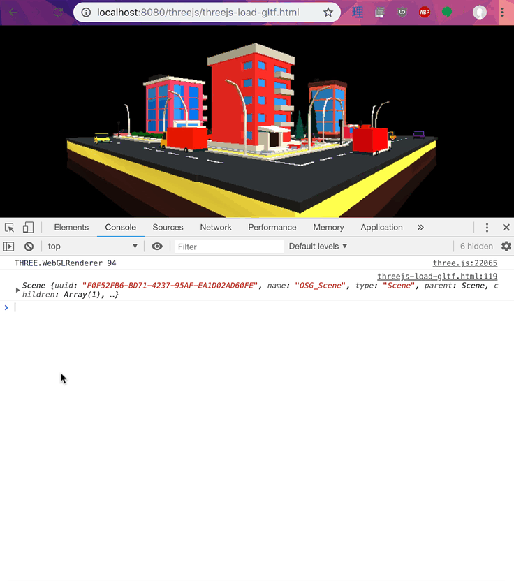
您还可以使用 console.error 以红色报告消息
包含堆栈跟踪。
另一个明显但经常被忽视的方法是添加<div>或<pre>标签
并将数据放入其中。
最明显的方法是制作一些 HTML 元素
<canvas id="c"></canvas> +<div id="debug"> + <div>x:<span id="x"></span></div> + <div>y:<span id="y"></span></div> + <div>z:<span id="z"></span></div> +</div>
设置它们的样式，使它们保持在画布的顶部。 （假设你的画布 填满页面）
<style>
#debug {
position: absolute;
left: 1em;
top: 1em;
padding: 1em;
background: rgba(0, 0, 0, 0.8);
color: white;
font-family: monospace;
}
</style>
然后查找元素并设置其内容。
// at init time
const xElem = document.querySelector('#x');
const yElem = document.querySelector('#y');
const zElem = document.querySelector('#z');
// at render or update time
xElem.textContent = someObject.position.x.toFixed(3);
yElem.textContent = someObject.position.y.toFixed(3);
zElem.textContent = someObject.position.z.toFixed(3);
这对于实时值更有用
将数据放在屏幕上的另一种方法是制作一个清除记录器。 我刚刚创造了这个术语，但我开发的很多游戏都使用了这个解决方案。这个想法 您是否有一个仅显示一帧消息的缓冲区。 想要显示数据的代码的任何部分都会调用某个函数 每帧将数据添加到该缓冲区。这工作量少了很多 而不是为上面的每条数据创建一个元素。
例如，让我们将上面的 HTML 更改为这样
<canvas id="c"></canvas> <div id="debug"> <pre></pre> </div>
并且让我们创建一个简单的类来管理这个清除后台缓冲区.
class ClearingLogger {
constructor(elem) {
this.elem = elem;
this.lines = [];
}
log(...args) {
this.lines.push([...args].join(' '));
}
render() {
this.elem.textContent = this.lines.join('\n');
this.lines = [];
}
}
然后让我们做一个简单的示例，每次单击鼠标都会生成一个网格 以随机方向移动 2 秒。我们将从其中之一开始 关于使事物响应
文章中的示例，每次单击鼠标时都会添加一个新的Mesh
const geometry = new THREE.SphereGeometry();
const material = new THREE.MeshBasicMaterial({color: 'red'});
const things = [];
function rand(min, max) {
if (max === undefined) {
max = min;
min = 0;
}
return Math.random() * (max - min) + min;
}
function createThing() {
const mesh = new THREE.Mesh(geometry, material);
scene.add(mesh);
things.push({
mesh,
timer: 2,
velocity: new THREE.Vector3(rand(-5, 5), rand(-5, 5), rand(-5, 5)),
});
}
canvas.addEventListener('click', createThing);
这是移动的代码我们创建的网格，记录它们， 并在定时器耗尽时删除它们
const logger = new ClearingLogger(document.querySelector('#debug pre'));
let then = 0;
function render(now) {
now *= 0.001; // convert to seconds
const deltaTime = now - then;
then = now;
...
logger.log('fps:', (1 / deltaTime).toFixed(1));
logger.log('num things:', things.length);
for (let i = 0; i < things.length;) {
const thing = things[i];
const mesh = thing.mesh;
const pos = mesh.position;
logger.log(
'timer:', thing.timer.toFixed(3),
'pos:', pos.x.toFixed(3), pos.y.toFixed(3), pos.z.toFixed(3));
thing.timer -= deltaTime;
if (thing.timer <= 0) {
// remove this thing. Note we don't advance `i`
things.splice(i, 1);
scene.remove(mesh);
} else {
mesh.position.addScaledVector(thing.velocity, deltaTime);
++i;
}
}
renderer.render(scene, camera);
logger.render();
requestAnimationFrame(render);
}
现在在下面的示例中单击鼠标
另一件事要记住的是网页可以传递数据 通过查询参数或锚点（有时称为 搜索和哈希。
https://domain/path/?query#anchor
您可以使用它来使功能可选或传入参数。
例如，让我们采用前面的示例并将其设置为
仅当我们在 URL 中放入 ?debug=true 时，调试内容才会显示。
首先我们需要一些代码来解析查询字符串
/**
* Returns the query parameters as a key/value object.
* Example: If the query parameters are
*
* abc=123&def=456&name=gman
*
* Then `getQuery()` will return an object like
*
* {
* abc: '123',
* def: '456',
* name: 'gman',
* }
*/
function getQuery() {
return Object.fromEntries(new URLSearchParams(window.location.search).entries());
}
然后我们可以使调试元素默认不显示
<canvas id="c"></canvas> +<div id="debug" style="display: none;"> <pre></pre> </div>
然后在代码中我们读取参数并选择取消隐藏
调试信息当且仅当传入?debug=true时
const query = getQuery();
const debug = query.debug === 'true';
const logger = debug
? new ClearingLogger(document.querySelector('#debug pre'))
: new DummyLogger();
if (debug) {
document.querySelector('#debug').style.display = '';
}
我们还制作了一个不执行任何操作的DummyLogger，并选择在未传入?debug=true时使用它。
class DummyLogger {
log() {}
render() {}
}
您可以看看我们使用这个网址：
没有调试信息，但如果我们使用这个网址：
debug-js-params.html?debug=true
有调试信息
可以传入多个参数，用'&'分隔，如somepage.html?someparam=somevalue&someotherparam=someothervalue。
使用这样的参数我们可以传递各种选项。也许 speed=0.01 会减慢我们的应用程序的速度，以便更容易理解某些内容，或者 showHelpers=true 是否添加助手
显示其他课程中看到的灯光、阴影或相机视锥体。
每个浏览器都有一个调试器，您可以在其中暂停程序 逐行检查并检查所有变量。
教您如何使用调试器对于本主题来说太大了 文章，但这里有一些链接
NaN 在调试器或其他地方NaN 是 Not A Number 的缩写。这是 JavaScript 会分配的内容
当你做一些在数学上没有意义的事情时作为一个值。
作为一个简单的例子
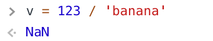
经常当我在做一些事情并且屏幕上没有出现任何东西时
我会检查一些值，如果我看到 NaN 我会立即得到一个
开始寻找的地方。
作为我第一次开始为
我制作的有关加载 gLTF 文件的文章
使用 SplineCurve 类制作 2D 曲线的曲线。
然后我使用该曲线像这样移动汽车
curve.getPointAt(zeroToOnePointOnCurve, car.position);
curve.getPointAt 内部调用 set 函数
作为第二个参数传递的对象。在这种情况下
第二个参数是 car.position ，它是一个 Vector3。 Vector3 的
set 函数需要 3 个参数，x、y 和 z，但 SplineCurve 是一条 2D 曲线
因此它仅使用 x 和 y 调用 car.position.set.
结果是 car.position.set 将 x 设置为 x，将 y 设置为 y，将 z 设置为 undefined.
A 快速在调试器中浏览汽车的 matrixWorld
显示了一堆 NaN 值。
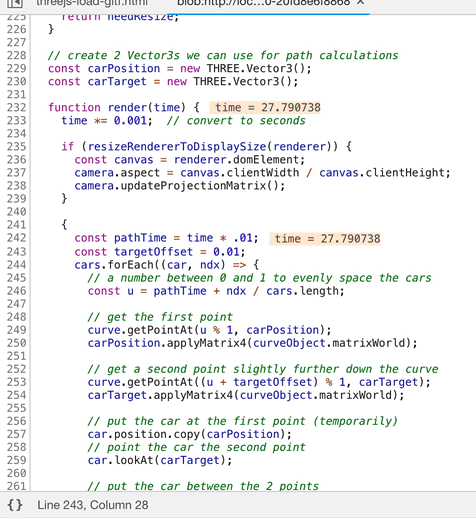
看到矩阵中有 NaN 暗示类似 position 的内容，
rotation、scale 或影响该矩阵的其他函数有问题
数据。从他们的角度向后追溯，很容易找到问题所在。
在NaN之上还有Infinity，这是一个类似的标志
某处存在数学错误。
THREE.js 是开源的。不要害怕查看代码内部！ 您可以在 github 上查看内部内容。 您还可以通过单步调试器中的函数来查看内部。
requestAnimationFrame 放在渲染函数的底部。我经常看到这种模式
function render() {
requestAnimationFrame(render);
// -- do stuff --
renderer.render(scene, camera);
}
requestAnimationFrame(render);
我建议将调用requestAnimationFrame 在
底部如
function render() {
// -- do stuff --
renderer.render(scene, camera);
requestAnimationFrame(render);
}
requestAnimationFrame(render);
最大的原因是这意味着如果出现错误，您的代码将停止。推杆
顶部的 requestAnimationFrame 意味着即使您
由于您已经请求了另一个帧，因此出现错误。 IMO最好找到
这些错误比忽略它们要好。它们很容易成为某件事的原因
没有像您期望的那样出现，但除非您的代码停止，否则您甚至可能不会
注意.
这基本上意味着知道例如何时使用度数和何时使用度数 何时使用弧度。不幸的是 THREE.js 没有 在任何地方始终使用相同的单位。从我的头顶上掉下来 相机的视野以度为单位。所有其他角度都在 弧度.
另一个需要注意的地方是你的世界单位大小。直到 最近，3D 应用程序可以选择他们想要的任何单位尺寸。一个应用程序可能会选择 1 单位 = 1 厘米。另一个人可能会选择 1 单位 = 1 英尺。其实还是 确实，您可以为某些应用选择您想要的任何单位。 也就是说，THREE.js 假设 1 单位 = 1 米。这对于 比如基于物理的渲染，使用米来计算 灯光效果。对于 AR 和 VR 来说也很重要，它们需要 处理现实世界的单位，例如您的手机在哪里或 VR 在哪里 控制器是.
如果您决定询问有关 THREE.js 的问题，那么几乎总是会出现 您需要提供 MCVE，它代表最小、完整、 可验证，示例.
最小部分很重要。假设您有问题 加载 gLTF 的最后一个示例中的路径移动 文章。这个例子有很多部分。将它们列出来 它有
这相当巨大。如果您的问题只是关于您的以下部分的路径
可以删除大部分 HTML，因为您只需要 <canvas> 和 <script> 标记
对于three.js。您可以删除 CSS 和调整大小代码。您可以删除 .GLTF
代码，因为你只关心路径。您可以移除灯和
使用 MeshBasicMaterial 阴影。你当然可以删除 lil-gui
代码。该代码创建了一个带有纹理的地平面。使用一个会更容易
GridHelper。最后，如果我们的问题是如何让事物走上一条我们可以
只需在路径上使用立方体而不是加载的汽车模型。
这里有一个更简单的示例，考虑了上述所有内容。它 从 271 行缩减到 135 行。我们甚至可以考虑缩减它 通过简化我们的路径来获得更多。也许有 3 或 4 个点的路径 与我们的路径一样好，有 21 个点。
我保留了 OrbitController 只是因为它对其他人有用
移动相机并弄清楚发生了什么，但取决于
关于你的问题，你也许也可以删除它。
制作 MCVE 的最好的事情是我们经常会解决我们自己的问题 问题。删除所有不需要的东西的过程 我们可以举一个最小的例子来更多地重现这个问题 通常会导致我们遇到错误。
除此之外，它尊重所有人的时间 要求查看您在 Stack Overflow 上的代码。通过使最小 例如，您使他们更容易为您提供帮助。你也会 在这个过程中学习。
同样重要的是，当你去 Stack Overflow 发布你的问题时把你的 代码代码片段。 当然欢迎您使用 JSFiddle 或 Codepen 或类似网站进行测试 你的 MCVE 但一旦你真正在 Stack Overflow 上发布你的问题 您需要将重现问题的代码放在问题本身中。 通过制作片段，您可以满足该要求。
另请注意，此站点上的所有实时示例都应作为片段运行。 只需将 HTML、CSS 和 JavaScript 部分复制到各自的位置即可 片段编辑器的一部分。 请记住尝试删除与以下内容无关的部分 您的问题并尝试使您的代码达到所需的最少数量。
遵循这些建议，您更有可能获得帮助 与你的问题。
MeshBasicMaterial因为 MeshBasicMaterial 不使用灯光，这是一种方法
删除某些内容可能未显示的原因。如果你的对象
使用 MeshBasicMaterial 显示，但不使用任何材质
您在使用时就知道问题可能出在材料上
或灯光，而不是代码的其他部分。
near 和 far 设置A PerspectiveCamera 具有 near 和 far 设置，这些设置包含在
有关相机的文章。确保它们的设置适合
包含您的对象的空间。甚至可能只是暂时将它们设置为
像 near = 0.001 和 far = 1000000 这样的大值。您可能会运行
深度分辨率问题，但你至少能够看到你的物体
前提是它们位于相机前面。
有时，某些东西不会出现，因为它们不在相机前面。如果
您的相机无法控制，请尝试添加相机控制，例如
OrbitController 这样您就可以环顾四周并找到您的场景。或者，尝试构图
使用本文中介绍的代码的场景。
该代码找到场景部分的大小，然后移动相机并
调整 near 和 far 设置以使其可见。然后你可以查看
调试器或添加一些 console.log 消息来打印尺寸和中心
场景.
这只是另一种说法，如果其他一切都失败了
一些有效的东西，然后慢慢地添加东西回来。如果你得到
屏幕上什么都没有，然后尝试直接放入一些东西
相机前面。制作一个球体或盒子，给它一个简单的材质
就像 MeshBasicMaterial 一样，并确保您可以在屏幕上看到它。
然后开始时不时地添加一些内容并进行测试。最终
你要么会重现你的错误，要么会在途中发现它。
这些是调试 JavaScript 的一些技巧。我们也去吧 调试 GLSL 的一些技巧.